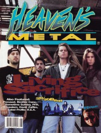

Living Sacrifice
|  |
| May 1994 Heaven's Metal |
 |
| November 2000 HM |
 |
| January 2010 HM |
Media coverage:
- Sep 1991 in Heaven's Metal "Living Sacrifice Is Dead on Target", by Steve Schmutzer
- Nov 1992 in Heaven's Metal "Concert Review: Living Sacrifice", by Marc Carpenter
- Jan 1993 in Heaven's Metal "Being A Living Sacrifice", by Doug Van Pelt
- 1993 in Sacred Rock "Living Sacrifice", by James W Williams
- Sep 1993 in Heaven's Metal "Concert Review: Mortification, Living Sacrifice", by Spiny Norman
- May 1994 in Heaven's Metal "Back For More", by Doug Van Pelt
- Jul 1997 in HM "On Being Reborn", by Dan MacIntosh
- Sep 1997 in 7ball "Living Sacrifice", by Brad Caviness
- Nov 2000 in HM "Too Legit To Quit", by Doug Van Pelt
- May 2001 in Campus Life "Crank It Up!", by Chris Lutes
- Sep 2002 in HM "Hammer, Talon, & Flame", by Christopher Patton, Bruce Fitzhugh
- Jan 2003 in HM "Live Report: 09.21.02 - Metro, Chicago", by Gordon (a girl called)
- Mar 2003 in HM "Hardnews: Up In The Air", by Bruce Fitzhugh
- Sep 2003 in HM "Poster: Living Sacrifice"
- Mar 2005 in HM "Hardnews: Quick & Concise: Living Sacrifice"
- May 2009 in HM "Poster: Living Sacrifice"
- Nov 2009 in HM "Hardnews: Quick & Concise: Living Sacrifice"
- Jan 2010 in HM "... You Don't Mess Around With Living Sacrifice", by Doug Van Pelt
- Jan 2012 in HM "In Finite Live", by Doug Van Pelt
- Nov 2013 in HM "Living Sacrifice", by Robert Houston
- 1 Jan 2014 in CCM Digital "Living Sacrifice", by Andy Argyrakis
Albums & reviews:
1990: No Yielding To Ungodly
- Dec 1990 in Heaven's Metal, by John Wilson
- Jul 1991 in Harvest Rock Syndicate, by Kevin Allison
- Sep 1991 in Heaven's Metal, by Jeff Lott
- Jun 2010 in Heaven's Metal, by Jeff McCormack
- Sep 1993 in Heaven's Metal, by David A. Jenison
- Fall 1993 in True Tunes News, by Mark Robertson
- Jan 1993 in Heaven's Metal, by Spiny Norman
- 1993 in Sacred Rock, by James W Williams
- Feb 1993 in The Lighthouse, by Brad Mattern
- Mar 1993 in Syndicate, by Arsenio Orteza
- 1993 in Cornerstone, by Don Hill
- Jun 2010 in Heaven's Metal, by Lloyd Harp
- Jul 1994 in Heaven's Metal, by Phil Borrero
- 1995 in Cornerstone, by Don Hill
- Jun 2010 in Heaven's Metal, by Michael J. Larson
- Win 1996 in The Ultimatum Metal Mag, by Alex Cantwell
- 1997 in Cornerstone, by Don Hill
- Sum 1997 in Garlic Press
- Jul 1997 in HM, by Doug Van Pelt
- Sep 1997 in 7ball, by Brad Caviness
- Jan 1998 in YouthWorker, by Garth Heckman
- Jan 1998 in Chariot Mag
- Jun 2010 in Heaven's Metal, by Jonathan Swank
- Nov 2000 in HM, by Melba Jackson
- 2001 in Cornerstone, by Don Hill
- Jan 2001 in YouthWorker, by Dave Urbanski
- Feb 2001 in CCM, by Brian Quincy Newcomb
- Jun 2010 in Heaven's Metal, by Doug Van Pelt
- Sep 2002 in HM, by Daniel Markham
- Mar 2003 in YouthWorker, by Dave Urbanski
- Mar 2003 in 7ball, by Anthony DeBarros
- Jun 2010 in Heaven's Metal, by Chris Gatto
- Jul 2005 in HM, by Jamie Lee Rake
- Jan 2010 in HM, by David Stagg
- Jun 2010 in Heaven's Metal, by Chris Gatto
- Mar 2010 in HM, by Daniel Garcia
- Nov 2013 in HM, by David Stagg
- Dec 2013 in CCM Digital, by Matt Conner
- Aug 2017 in Metalbreed, by Andrea Aponte R
Award Summary (Nominations / Wins)
Dove Awards- 2002 Dove Awards
- Hard Music Album: The Hammering Process
- Hard Music Recorded Song: "Perfect"
- Hard Music Album: Conceived in Fire
- Hard Music Recorded Song: "Symbiotic"
Books about Living Sacrifice
- "Living Sacrifice" in The Encyclopedia of Contemporary Christian Music (Mark Allan Powell, 2002)

© 2011 CMnexus. Last updated September 2019. Contact: editor -AT- cmnexus -DØT- org About